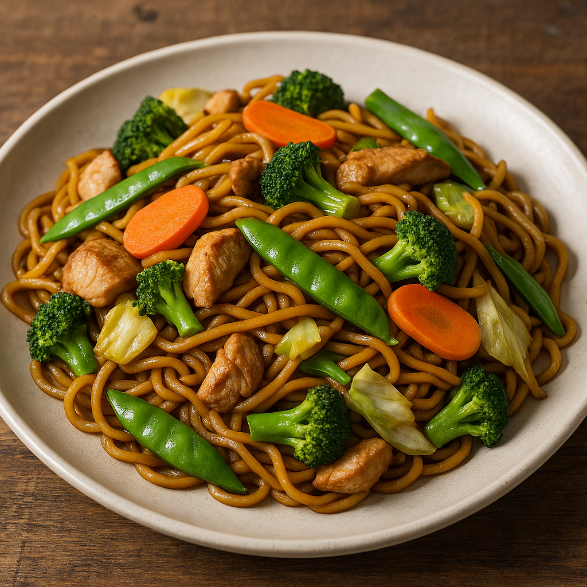

Yakisoba (Japanese Stir-Fried Noodles)

A vibrant and savory Japanese Yakisoba stir-fry made with tender chicken, crisp vegetables, and thick noodles coated in a sweet and tangy sauce.
Yakisoba is a beloved Japanese street food that combines stir-fried noodles with meat and vegetables, all tossed in a bold, umami-rich sauce. Despite its name, which means "fried buckwheat noodles," yakisoba is actually made with wheat-based noodles similar to ramen. This dish is quick to make, incredibly versatile, and packed with flavor—perfect for busy weeknights or casual meals.
The magic of yakisoba lies in the balance between sweet, salty, and tangy notes in the sauce, paired with the variety of textures from the stir-fried vegetables and juicy chicken. You can customize the dish endlessly—add mushrooms, bell peppers, or even seafood depending on your taste. Whether served at festivals, lunch boxes, or at home, yakisoba never fails to satisfy.
Ingredients (Serves 4):
- 400g yakisoba noodles (fresh or steamed)
- 300g boneless chicken thighs or breast, cut into strips
- 1 cup cabbage, chopped
- 1 medium carrot, thinly sliced
- 1/2 cup broccoli florets
- 1/2 cup snap peas or bell peppers (optional)
- 2 tablespoons vegetable oil
For the Sauce:
- 3 tablespoons Worcestershire sauce
- 2 tablespoons oyster sauce
- 1 tablespoon soy sauce
- 1 teaspoon ketchup
- 1 teaspoon sugar
Instructions:
- Prepare the sauce:
- In a small bowl, mix Worcestershire sauce, oyster sauce, soy sauce, ketchup, and sugar. Set aside.
- Cook the chicken:
- Heat 1 tablespoon of oil in a large skillet or wok over medium-high heat. Add the chicken and cook until browned and cooked through. Remove and set aside.
- Stir-fry the vegetables:
- In the same pan, add another tablespoon of oil. Stir-fry the cabbage, carrot, broccoli, and any additional veggies for about 3–4 minutes, until slightly tender but still crisp.
- Add noodles and combine:
- Add the noodles to the pan. If using packaged noodles, loosen them under warm water first. Return the chicken to the pan, pour in the sauce, and toss everything together until well coated and heated through.
- Serve:
- Plate the yakisoba and top with your favorite garnishes. Serve hot and enjoy!
Back